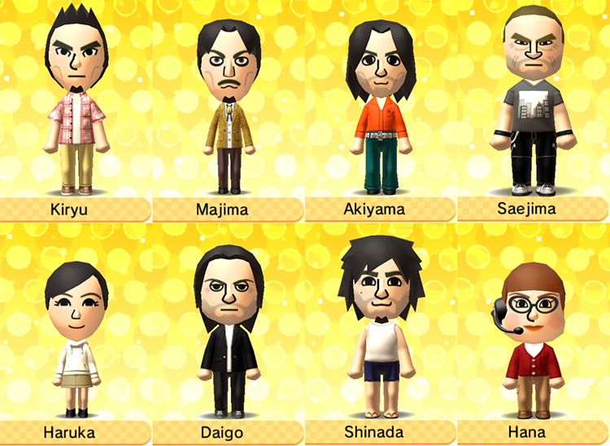

I ended up having a lot more to say about the Yuzu situation that I thought! Oops! If you're only interseted in the Yakuza Tomodachi Life screenshots, you can scroll down here.

Recently I've been seeing some miscellaneous tweets about Tomodachi Life, and I've been browsing a lot of sites on Neocities that are making me nostalgic for Nintendo consoles, so I decided to start playing the game!
I do not have a 3DS, so I've been playing through the Citra emulator. In which, I am very glad I decided to start playing this when I did, because just days later the news broke of Nintendo suing the Yuzu emulator, thus ending Yuzu's support of Citra and both of those emulator repositories being pulled.
I have a lot of feelings about this, nothing of which that hasn't already been said. The narrative being pushed that emulation is promoting piracy and circumventing protected property is ridiculous.
Let's say that I wanted to play Tomodachi Life on real hardware. First I would have to obtain a 3DS. In September 2020, Nintendo discontinued production of the 3DS. So fine, I'd have to go on eBay and find a good-quality used 3DS being sold second-hand. Nintendo would not see that profit.
Next, if the 3DS listing was legit and the hardware was functional, I'd have to obtain a copy of Tomodachi Life. In April 2023, Nintendo shut down the online stores for the 3DS and Wii U. Okay, so there's no way for me to buy or download a digital copy of Tomodachi Life on my legally acquired 3DS. I'd have to do the same as above, find a random second-hand listing on eBay for a phyiscal copy of the game. Nintendo would not see that profit.
Let's say the game arrives, and assume that the game card can even be read on the first try. Then cool, I'd be playing Tomodachi Life on real hardware! One of the main features of the game is creating and sharing Miis online—oh wait, in just one month, April 2024, online services for the 3DS and Wii U will be discontinued.
Now, imagine all this if you wanted to play a 3DS game that was never released in your country. If you never played an older generation game due to a language barrier when you were younger, how would you obtain it if it's an expensive collector item?
These games are becoming limited resources. Even if you have the money to support Nintendo, Nintendo doesn't give you the option to support them: the only way to buy these games is through second-hand listings. If you weren't there when a game was released, if you couldn't afford a console in the past, if you simply didn't know the game existed until years later, then sorry, but you're shit out of luck. That's a game you're not supposed to experience in your life. Maybe I'm the crazy one thinking this, but I think this is a bit silly and perhaps arbitrary!
I've been playing games fairly exclusively on PC for about a decade, but before then I was a big Nintendo and Playstation gamer. The PS2, PS3, Gamecube, and Wii are my absolute favorite consoles—I hold a lot of dear nostalgia for this era of games. By around the time the Wii U and the 3DS released, I had gotten my first laptop, and I started playing games on PC almost exclusively.
The next and last time I'd play a newer generation console would be in 2020 where I bought a Switch exclusively for Animal Crossing: New Horizons. It was fun! But it quickly exhausted most of its entertainment value during the summer lockdowns of 2020. What I didn't realize, this being my first console in about a decade, was that online play was paywalled behind Nintendo Switch Online. A lot of the fun community aspect of the game (sharing custom outfits, making custom tiles, visiting other's islands) wasn't something I was able to join.
Even if, now, I bit the NSO expense and started playing New Horizons with strangers online, the experience wouldn't be what it was during its release. Many people consider New Horizons a dead game due to the lack of players and the lack of support from Nintendo post-release—even though the game released less than four years ago, and even though it is still a main title on a current generation console.
Are we supposed to accept that all games are now limited-time releases? Do we accept that the is industry going to continue accelerating so rapidly that support for new games ends after only one or two years after release, that developers should be hemorrhaged in crunch conditions just for their work to be removed from shelves when it's time for the next generation?
Nintendo has been terrible in terms of actively antagonizing their fanbase, so of course I didn't expect any different behavior from them, but it's so frustrating to see that captialism has rooted itself so much that the act of purchasing a product—a game, a console, a movie, a TV show—means only owning it for a temporary time. The powers that be can revoke your access whenever they feel, even if you legally obtained that media, even if you fully supported its creators. I think that this needs to be in conversation with the recent attacks on archive.org—if archival websites and preservation projects continue to be targeted, stories are going to be permanently lost in the pursuit of capital.
Emulation is preservation. It is preserving what is being artificially taken from us. If purchasing does not mean owning, then pirating does not mean stealing. Again, nothing about what I'm saying is new.
But anyway, back to Kamurocho Island:

The residents are currently: myself (by default, not as an ego thing lol), Kiryu, Majima, Saejima, Akiyama, Shinada, Daigo, Haruka, and Hana. There's not a lot of islanders and gender ratio is a bit abysmal because I haven't yet finished Yakuza 5, so I'm a bit of a ways away from meeting the female Like a Dragon protagonists. :(
I don't believe Citra has a built-in screenshot feature so I didn't think about grabbing screenshots until a bit of a ways into the game. Regardless, here are some cute current events unfolding:


Majima and Shinada have been going out a lot together! I think this is because I gave both of them the baseball bat as a gift. Seeing them bonding is adorable, especially because I haven't seen that in Yakuza 5 (given, gesturing broadly, what happens of Y5*).
*I have not finished Y5 and this is referencing events learned after Part 1 Chapter 4, I will not elaborate further because I don't see why this blog post should include spoilers lol.
Majima looks extremely scary to be because if an eyepatch accessory exists, I have not unlocked it, so he looks extremely uncanny and unsettling to me, lol. These screenshots were chosen as they were the least abrasive to look at.

...Kiryu doesn't seem too happy about this, though!! Someone's definitely jealous.
One thing I adore about this game is the visual charm—the Miis lighting on fire to show that they're mad, their facial features rotating and their eye shape changing to convey emotions, all of this is amazing design.
One thing I will say I'm mildly annoyed at is how only hetero "sweetheart" couples are allowed in the game—I went into this thinking that gays were allowed due to me misremembering a post that this game was banned in Russia due to allowing same-sex couples, but I now realize that (1) the game in question was Miitopia, not Tomodachi Life, and (2) Miitopia was not banned in Russia but was rated 18+ due to allowing same-sex marriage. Do not trust me with information, I guess.
It would have been cute to see what random couples this game's number generator could've created, but it's not the end of the world. That's what AO3 is for.


I bring all this up because I finally got my first couple on the island! Akiyama fell in love with Hana and they became sweethearts!!! Ugh, my heart.
I'd love to look into the personality mechanics of this game and see if a certain personality type will fall in love with different types more easily than others. Granted, Hana is the only adult woman on the island so the chances of her being with Akiyama wasn't even that small, but it is fun that this naturally occurred.

The rap battles being a daily event is amazing, and I'm happy to announce that Majima is the worst rapper of the bunch: he has not won a single battle since I've started spectating them, and on day two he lost in the second round. Zero bars!!
The rest of these photos is a miscellaneous dump. The only other main storyline happening on the island is that Kiryu and Akiyama are best friends, but as far as I can remember there was no real event that announced it. Saejima, Daigo, and Haruka are hanging out a lot, which I find adorable. Kiryu, Akiyama, Majima, and my Mii also hang out a fair amount ^_^. I'll try to get better at screenshotting big events so I can share them!


Dyna Chair needs to get Haruka better gigs.
I want to keep updating this new island events, I'm not sure yet if those will be in a new blog post or if I'll continue updating this existing page—I need to figure out the best way to record footage and embed it here so I can share the beautiful karaoke renditions.
But that is all for now! Download your favorite emulators today.